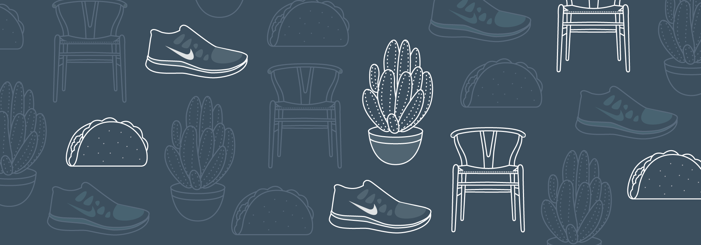
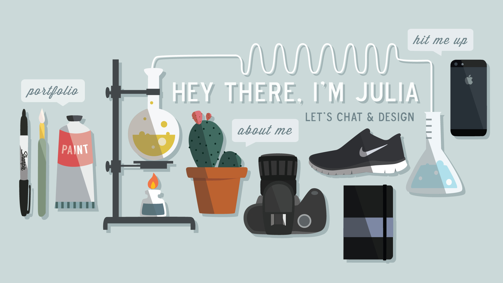
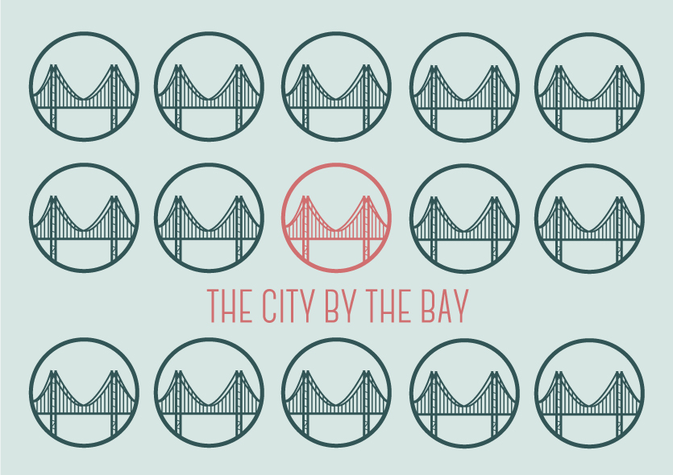
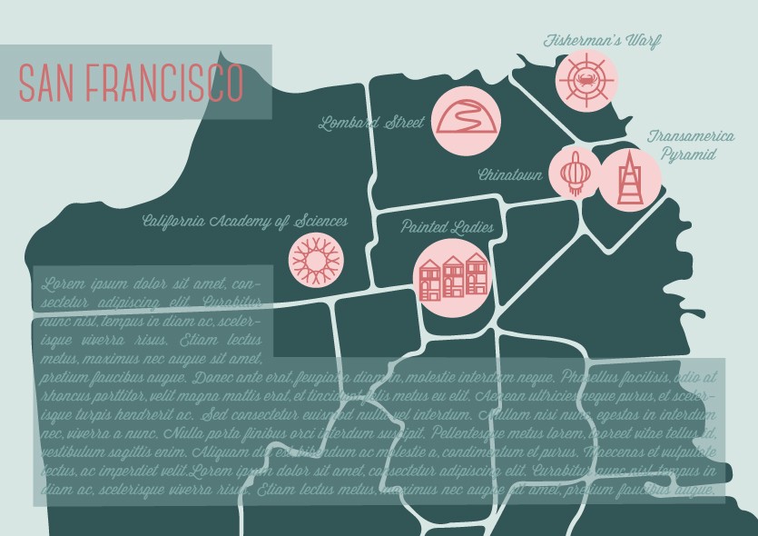
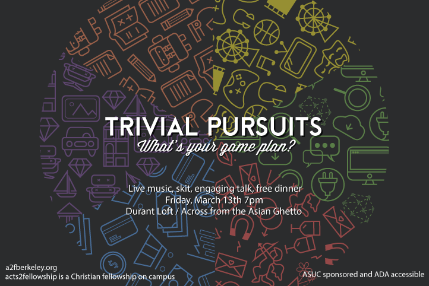
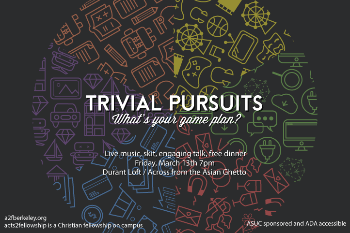

Illustration
During the fall of last year, I took a student taught class on Photoshop and Illustrator, which led me to explore the world of illustration. I make icons and patterns in my free time, and here's just some of them!



 
